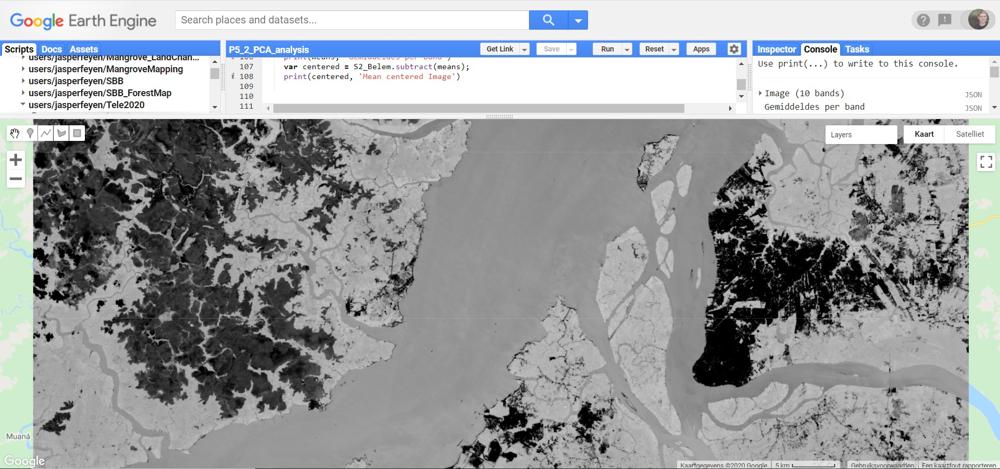

Principale componenten analyse
De Principale componentenanalyse
Een principale componentenanalyse (PCA) is een lineaire transformatie waarbij de banden worden gezocht die het meeste informatie bevatten. Veelal wordt deze gebruikt om processingtijd van grote datasets te beperken, zoals vaak bij hyperspectrale beelden het geval is.
Het achterliggende principe is dat de verschillende spectrale banden van een sensor vaak informatie dragen die (gedeeltelijk) gecorreleerd zijn aan elkaar, waardoor er sprake is van onnodige of dubbele informatie. PCA zorgt voor een transformatie van de multispectrale data zodat nieuwe variabelen niet meer of amper met elkaar gecorreleerd zijn.

Principe van PCA voor een dataset met 2 banden (rood en groen) die met elkaar gecorreleerd zijn. Een PCA werd uitgevoerd, bestaande uit een translate (van o naar o’) en een rotatie zodoende dat de er 2 nieuwe variabelen ontstaan (PC1 en PC2).
De eerste principale component wordt dus gevonden door de richting in de data waar het meeste variatie te vinden is en bijgevolg de meeste data. De 2e principale component komt hier loodrecht op te staan. Het spreekt voor zich dit dit in een 2-dimensionale ruimte zoals in bovenstaande figuur eenvoudig is, maar dit kan eveneens worden toegepast in een meer-dimensionale dataset (zoals bijvoorbeeld een Sentinel-2 beeld met 12 banden).
Mathematisch gezien kan een PCA worden gezien als een zoektocht naar een translatie en rotatie van de multidimensionale dataset, waardoor de covariantiematrix van de dataset een diagonale matrix wordt na transformatie. In andere woorden, elke nieuwe variabele is gecorreleerd met zichzelf en niet meer met de andere variabele.
De eigenwaarden en eigenvectoren van de originele covariantiematrix worden dus berekend. Elke eigenwaarde met de geassocieerde eigenvector beschrijven dan de nieuwe principale component, waarbij de eigenvector de richting geeft van de nieuwe component en de eigenwaarde als een proxy dient voor de hoeveel informatie dat de component bevat. (voor de specifieke wiskundige details kan worden verwezen naar de cursus van Wiskunde 1 (Lineaire algebra) of naar deze 5-minuten durende opfrissing..
In Earth Engine is het relatief eenvoudig om de PCA-berekeningen door te voeren.
-
Open een Nieuw Script: 'PC5-PCA'
-
We nemen opnieuw het Sentinel-2 beeld uit Belem. Aangezien enkel de banden B2, B3, B4, B5, B6, B6, B8, B8A, B11 en B12 relevant zijn voor verdere analyse, weerwhouden we enkel deze banden met de functie
.select().//Importeren van het Sentinel-2 beeld van Belem var S2_Belem = ee.Image('COPERNICUS/S2_SR/20200808T134219_20200808T134214_T22MGD') //Enkel banden relevant voor de PCA weerhouden in de Image var bands = ['B2','B3','B4','B5','B6','B7','B8','B8A','B11','B12']; var S2_Belem = S2_Belem.select(bands) -
Opstellen van de PCA-functie (met bijhorende 'helper'-functie) //PCA-functie
var getPrincipalComponents = function(centered, scale, region) {
// Collapse the bands of the image into a 1D array per pixel.
var arrays = centered.toArray();
// Berekenen van de covariantie a.d.h.v. een reduceRegion
var covar = arrays.reduceRegion({
reducer: ee.Reducer.centeredCovariance(),
geometry: region,
scale: scale,
maxPixels: 1e9
});
print(covar, 'covariance')
// Get the 'array' covariance result and cast to an array.
// This represents the band-to-band covariance within the region.
var covarArray = ee.Array(covar.get('array'));
// Perform an eigen analysis and slice apart the values and vectors.
var eigens = covarArray.eigen();
print(eigens)
// eigenValues is a P-length vector of Eigenvalues.
var eigenValues = eigens.slice(1, 0, 1);
print(eigenValues,'EigenValues')
// This is a PxP matrix with eigenvectors in rows.
var eigenVectors = eigens.slice(1, 1);
print(eigenVectors, 'Eigenvectors')
// Convert the array image to 2D arrays for matrix computations.
var arrayImage = arrays.toArray(1);
// Left multiply the image array by the matrix of eigenvectors.
var principalComponents = ee.Image(eigenVectors).matrixMultiply(arrayImage);
// Turn the square roots of the Eigenvalues into a P-band image.
var sdImage = ee.Image(eigenValues.sqrt())
.arrayProject([0]).arrayFlatten([getNewBandNames('sd')]);
// Turn the PCs into a P-band image, normalized by SD.
return principalComponents
// Throw out an an unneeded dimension, [[]] -> [].
.arrayProject([0])
// Make the one band array image a multi-band image, [] -> image.
.arrayFlatten([getNewBandNames('pc')])
// Normalize the PCs by their SDs.
.divide(sdImage);
};
// De PCAfunctie heeft noog aan een helper-functie, dat een lijst met nieuwe bandnamen samenstelt
var getNewBandNames = function(prefix) {
var seq = ee.List.sequence(1, bandNames.length());
return seq.map(function(b) {
return ee.String(prefix).cat(ee.Number(b).int());
});
};
- Toepassen van de PCA-functie. Hiervoor dienen eerst enkele inputparameters met informatie worden aangemaakt
/* DE PCA-functie is opgesteld. In wat volgt kunnen we deze toepassen */
// Set some information about the input to be used later.
var scale = 30; //(30m om processingtijd wat te verminderen => sentinel2 kan tot 10m)
var bandNames = S2_Belem.bandNames();
var region = S2_Belem.geometry(); // We nemen de regio van het volledige beeld
- De gebruikte PCA-functie heeft een 'mean centered' beeld nodig. Dit betekend dat het gemiddelde per band de nieuwe '0-waarde' wordt en elke pixel een waarde krijgt relatief aan deze 0-waarde. Dit zorgt voor een snellere covariantie-berekening.
// Mean center the data to enable a faster covariance reducer
// and an SD stretch of the principal components.
var meanDict = S2_Belem.reduceRegion({
reducer: ee.Reducer.mean(),
geometry: region,
scale: scale,
maxPixels: 1e12
});
var means = ee.Image.constant(meanDict.values(bandNames));
print(means, 'Gemiddeldes per band')
var centered = S2_Belem.subtract(means);
print(centered, 'Mean centered Image')
// Uitvoeren van de PCA-functie => resultaat is beeld met PC's als nieuwe banden
var pcaImage = getPrincipalComponents(centered, scale, region);
//Bekijken van pcaImage
//print(pcaImage)
Image , pcaImage is een beeld met als banden de berekende principale componenten. Via een for-lus kunnen we elk deze banden ook in 1x plotten naar de MA
// Plot each PC as a new layer
for (var i = 0; i < bandNames.length().getInfo(); i++) {
var band = pcaImage.bandNames().get(i).getInfo();
Map.addLayer(pcaImage.select([band]), {min: -2, max: 2}, band);
}
Resultaten:

Principale Component 1

Principale Component 2

Principale Component 3